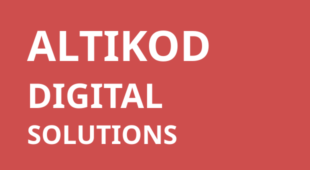

Misyonumuz
Kurumların operasyonel yükünü azaltan, veriye dayalı karar alma becerisini güçlendiren ve müşteri deneyimini iyileştiren yazılım çözümleri geliştirmek.

Yazılım geliştirme, yapay zeka, chatbot sistemleri, WhatsApp entegrasyonları, web ve mobil uygulamalarla kurumların operasyonlarını daha verimli, izlenebilir ve ölçeklenebilir hale getiriyoruz.
KOBİ'lerden üretim tesislerine, sağlık kuruluşlarından e-ticaret firmalarına kadar farklı sektörlerde; ihtiyaca özel, güvenli ve sürdürülebilir dijital çözümler tasarlıyoruz.
 Altıkod Demo
AI, WhatsApp, web + mobil ve entegrasyon çözümleri
Altıkod Demo
AI, WhatsApp, web + mobil ve entegrasyon çözümleri
Kurumların operasyonel yükünü azaltan, veriye dayalı karar alma becerisini güçlendiren ve müşteri deneyimini iyileştiren yazılım çözümleri geliştirmek.
Türkiye'de ve global pazarda, KOBİ ve kurumsal firmaların yapay zeka destekli dijital dönüşüm süreçlerinde güvenilir teknoloji partneri olmak.
Şeffaf iletişim, sürdürülebilir mimari, güvenlik, ölçülebilir sonuç, hızlı aksiyon ve uzun vadeli müşteri başarısı temel çalışma ilkelerimizdir.
Her projede önce iş ihtiyacını analiz eder, ardından doğru yazılım mimarisi, entegrasyon yapısı ve yapay zeka bileşenlerini birlikte kurgularız.
Şirket süreçlerine özel web portalları, yönetim panelleri ve müşteri arayüzleri geliştiririz.
iOS ve Android için kullanıcı dostu, güvenli ve ölçeklenebilir mobil uygulamalar üretiriz.
İş süreçlerinize özel yapay zeka modelleri, ajanlar ve analiz sistemleri tasarlarız.
Web siteniz, WhatsApp veya iç sistemleriniz için akıllı destek ve satış asistanları kurarız.
WhatsApp üzerinden destek, satış, randevu, sipariş ve bildirim akışları oluştururuz.
Manuel takip edilen iş adımlarını otomatik iş akışlarına dönüştürürüz.
Hazır çözümlerin yetmediği noktalarda kurumunuza özel yazılım mimarisi kurarız.
ERP, CRM, ödeme, kargo, e-ticaret, muhasebe ve üçüncü parti sistemleri birbirine bağlarız.
Web sitesi, doküman ve kurumsal verilerden yanıt üreten akıllı chatbot altyapısı.
Kullanım alanlarıMüşteri destek, satış ön görüşmesi, ürün yönlendirme, kurum içi bilgi asistanı.
FaydalarYanıt süresini düşürür, destek yükünü azaltır, bilgiye erişimi hızlandırır.
WhatsApp üzerinden otomatik yanıt, yönlendirme, randevu ve satış akışı sunar.
Kullanım alanlarıE-ticaret, sağlık, hizmet sektörü, bayi ağı, müşteri destek ekipleri.
Faydalarİletişim hacmini yönetir, müşteri bekleme süresini azaltır, satış fırsatlarını yakalar.
Müşteri görüşmelerini, talepleri, durumları ve ekip aksiyonlarını tek panelde toplar.
Kullanım alanlarıSatış ekipleri, çağrı merkezi, destek operasyonu, saha hizmetleri.
FaydalarTakip kaybını önler, ekip performansını görünür kılar, süreçleri standartlaştırır.
Operasyon, satış, müşteri ve performans verilerini anlaşılır raporlara dönüştürür.
Kullanım alanlarıYönetim raporları, satış takibi, üretim analizi, müşteri memnuniyeti ölçümü.
FaydalarKarar alma hızını artırır, veriyi merkezi hale getirir, riskleri erken görünür kılar.
Randevu oluşturma, hatırlatma, takvim yönetimi ve müşteri bilgilendirme süreçlerini yönetir.
Kullanım alanlarıSağlık kuruluşları, danışmanlık firmaları, servis işletmeleri, eğitim kurumları.
FaydalarRandevu kaçırma oranını azaltır, ekip takvimini düzenler, müşteri deneyimini iyileştirir.
Sesli komut, konuşma analizi ve otomatik yönlendirme kabiliyetleri sunan AI asistan.
Kullanım alanlarıÇağrı merkezi, saha ekipleri, toplantı analizi, müşteri görüşme kalite kontrolü.
FaydalarSes kayıtlarını anlamlı veriye çevirir, aksiyonları çıkarır, hizmet kalitesini ölçer.
Problem: Üretim raporları manuel hazırlanıyor, bakım talepleri geç fark ediliyordu.
Çözüm: Üretim verilerini toplayan raporlama paneli ve bakım bildirim otomasyonu geliştirildi.
Sonuç: Yönetim raporları günlük hale geldi, bakım taleplerinin takibi hızlandı.
Problem: Randevu yoğunluğu WhatsApp ve telefon kanallarında takip edilemiyordu.
Çözüm: WhatsApp botu, randevu yönetimi ve hasta bilgilendirme paneli kuruldu.
Sonuç: Randevu talepleri tek panelde toplandı, ekip üzerindeki iletişim yükü azaldı.
Problem: Ürün soruları ve sipariş durum talepleri destek ekibini yavaşlatıyordu.
Çözüm: AI chatbot, kargo API entegrasyonu ve ürün öneri akışı devreye alındı.
Sonuç: Sık sorulan talepler otomatikleşti, satış öncesi yanıt süresi kısaldı.
Ürün tanıtım videoları, kısa demo akışları ve ücretsiz ön görüşme ile işletmenize en uygun yazılım veya yapay zeka çözümünü değerlendirebilirsiniz.
Proje kapsamına göre değişir. Basit entegrasyonlar birkaç hafta içinde tamamlanabilirken, özel yazılım ve yapay zeka projeleri analiz, geliştirme ve test aşamalarıyla daha uzun planlanır.
Fiyatlandırma; kapsam, entegrasyon sayısı, kullanıcı rolleri, veri yapısı, yapay zeka bileşenleri ve destek ihtiyacına göre belirlenir.
Evet. Canlıya alma sonrası bakım, hata düzeltme, performans takibi, yeni özellik geliştirme ve danışmanlık desteği sunuyoruz.
Evet. CRM, ERP, e-ticaret, ödeme, kargo, çağrı merkezi ve özel API altyapılarıyla entegrasyon kurulabilir.
Web sitesi içerikleri, PDF dosyaları, ürün verileri, bilgi tabanı, CRM kayıtları ve canlı API verileriyle çalışabilir.
Kurumsal ve sürdürülebilir kullanım için WhatsApp Business API yapısı önerilir. İhtiyaca göre kurulum ve senaryo planlaması yapılır.
Evet. App Store ve Google Play yayın süreçleri için teknik hazırlık, test ve yönlendirme desteği sağlıyoruz.
Hata düzeltme, güvenlik güncellemeleri, performans takibi, küçük iyileştirmeler ve sistem izleme süreçlerini kapsayabilir.
Yetkilendirme, güvenli API kullanımı, veri erişim kontrolleri, yedekleme planları ve proje ihtiyacına uygun güvenlik standartları uygulanır.
İhtiyacınız, mevcut sistemleriniz, hedefleriniz, öncelikli problemleriniz ve olası çözüm yol haritası değerlendirilir.
Demo talep edin, teklif alın veya ücretsiz danışmanlık görüşmesi planlayın. Ekibimiz ihtiyacınızı analiz ederek size uygun çözüm yol haritasını çıkarır.